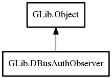

DBusAuthObserver
Object Hierarchy:
Description:
The DBusAuthObserver type provides a mechanism for participating in how a DBusServer (or a DBusConnection) authenticates remote peers.
Simply instantiate a DBusAuthObserver and connect to the signals you are interested in. Note that new signals may be added in the future
Controlling Authentication # {auth-observer}
For example, if you only want to allow D-Bus connections from processes owned by the same uid as the server, you would use a signal handler like the following:
static gboolean
on_authorize_authenticated_peer (GDBusAuthObserver *observer,
GIOStream *stream,
GCredentials *credentials,
gpointer user_data)
{
gboolean authorized;
authorized = FALSE;
if (credentials != NULL)
{
GCredentials *own_credentials;
own_credentials = g_credentials_new ();
if (g_credentials_is_same_user (credentials, own_credentials, NULL))
authorized = TRUE;
g_object_unref (own_credentials);
}
return authorized;
}
Namespace: GLib
Package: gio-2.0
Content:
Creation methods:
Signals:
Inherited Members:
All known members inherited from class GLib.Object